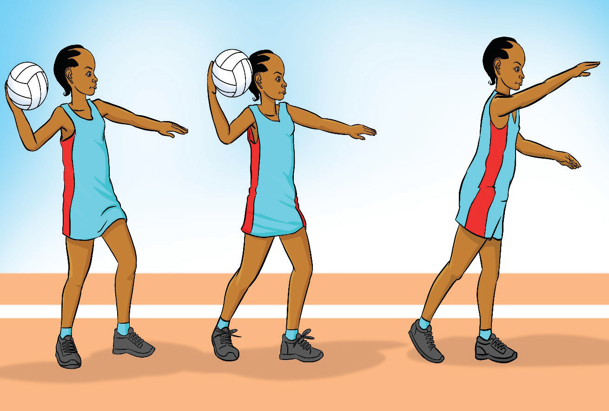

Shoulder pass
A shoulder pass is a strong, one-handed pass thrown from the shoulder. The pass is ideal for long-distance passing when a quick, powerful throw is needed to reach a teammate far away. The ball is held with one hand near the shoulder and pushed forward with force, making it best suited for longer, faster pass. This pass requires good hand-eye coordination to ensure accuracy and effective ball movement across the court. To practice the shoulder pass, follow these steps:
- (i) Hold the ball with your dominant hand just behind your head at the shoulder;
- (ii) Bend your elbow at a 90-degree angle and use your other hand to support the ball;
- (iii) Position your feet shoulder-width apart, with one foot in front of the other;
- (iv) Remove your supporting hand and use your dominant arm to propel the ball toward your target as shown in Figure 1.9; and
- (v) Use your fingers to direct the ball’s path, following through with your arm for accuracy and control.

Activity 1.6
Using various drills, practice a shoulder pass repetitively to master the skill.
Catching
Catching the ball means stopping the ball that is moving through the air and taking hold of it. It is crucial for maintaining possession, keeping the game flowing, and setting up attacking plays. A good catch allows players to quickly pass or shoot with accuracy. Effective catching techniques include: